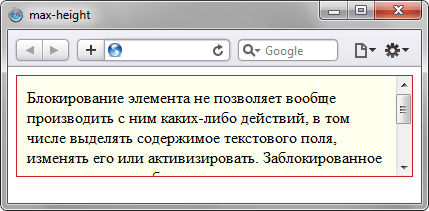

max-height
Устанавливает максимальную высоту элемента. Значение высоты элемента будет вычисляться в зависимости от значений установленных свойств height, max-height и min-height. В табл. 1 показано, чем руководствуется браузер при совместном использовании указанных стилевых свойств.
| Значения свойств | Высота | ||||
|---|---|---|---|---|---|
| min-height | < | height | < | max-height | height |
| height | < | max-height | height | ||
| height | > | max-height | max-height | ||
| min-height | > | height | > | max-height | min-height |
| min-height | > | height | < | max-height | min-height |
Данные из таблицы следует понимать следующим образом. Если значение высоты (height) больше значения max-height, то высота элемента принимается равной значению max-height.
Краткая информация
| Значение по умолчанию | none |
|---|---|
| Наследуется | Нет |
| Применяется | Ко всем элементам, кроме строчных и таблиц |
Синтаксис
max-height: <размер> | <проценты> | noneЗначения
В качестве значений принимаются пиксели (px), проценты (%) и другие единицы измерения, принятые в CSS. Отрицательные значения не допускаются.
- none
- Отменяет действие этого свойства.
Пример
<!DOCTYPE html>
<html>
<head>
<meta charset="utf-8">
<title>max-height</title>
<style>
.block {
overflow: auto; /* Полоса прокрутки при необходимости */
padding: 10px; /* Поля вокруг текста */
max-height: 80px; /* Максимальная высота */
background: #ffe; /* Цвет фона */
border: 1px solid #cb2027; /* Параметры рамки */
}
.block p {
margin: 2px auto; /* Отступы в абзаце */
}
</style>
</head>
<body>
<div class="block">
<p>Блокирование элемента не позволяет вообще производить с
ним каких-либо действий, в том числе выделять содержимое
текстового поля, изменять его или активизировать.
Заблокированное поле помечается обычно серым цветом</p>
<p>Некоторые браузеры позволяют выделять и копировать
содержимое заблокированного текстового поля, но все
остальные действия недоступны.</p>
</div>
</body>
</html>Результат данного примера показан на рис. 1.

Рис. 1. Результат использования свойства max-height
Объектная модель
Объект.style.maxHeight
Спецификация
| Спецификация | Статус |
|---|---|
| CSS Intrinsic & Extrinsic Sizing Module Level 3 | Рабочий проект |
| CSS Transitions | Рабочий проект |
| CSS Level 2 (Revision 1) | Рекомендация |
Браузеры
| Internet Explorer | Chrome | Opera | Safari | Firefox |
| 7 | 1 | 7 | 1 | 1 |
| Android | Firefox Mobile | Opera Mobile | Safari Mobile |
| 1 | 1 | 7 | 1 |